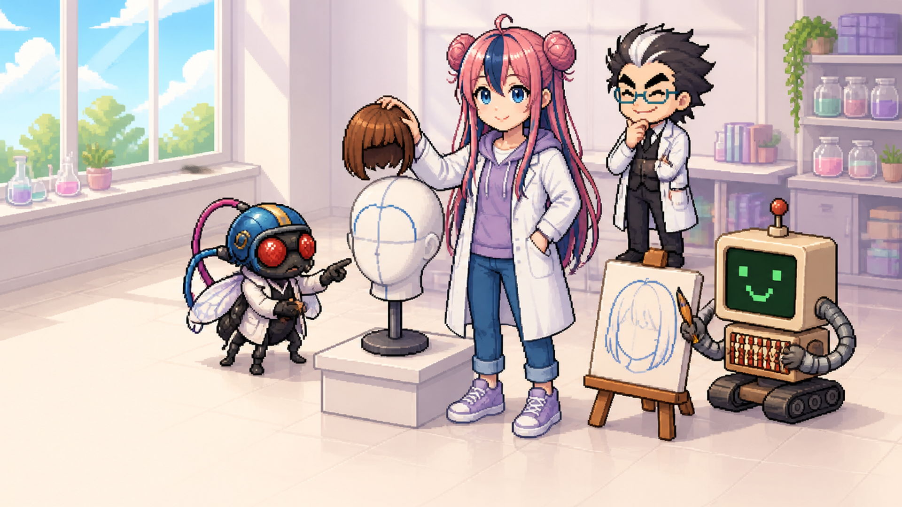
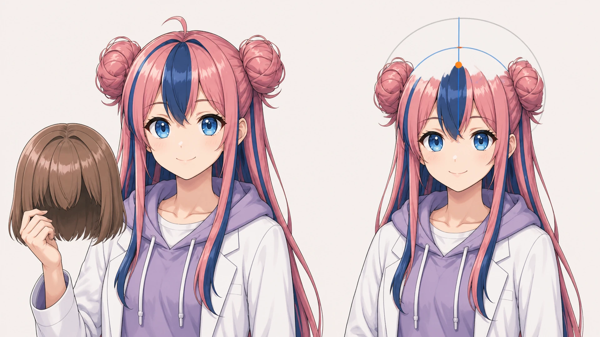
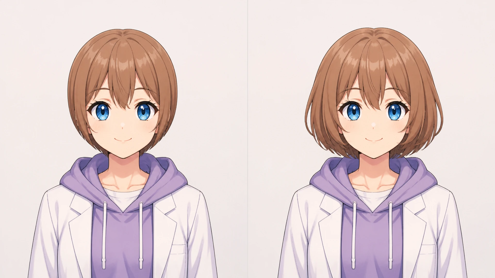
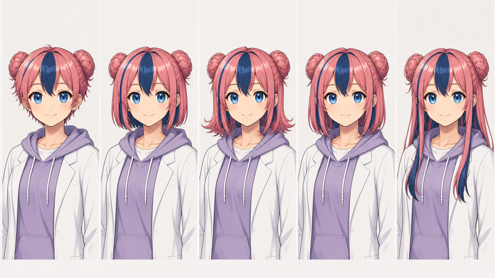
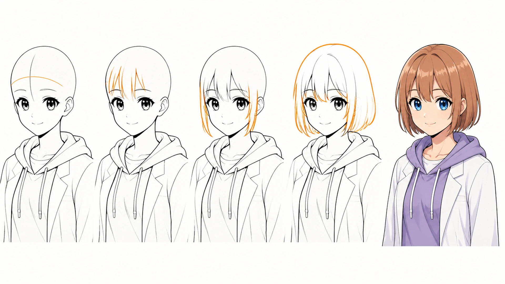
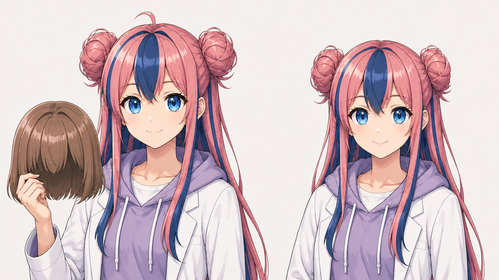
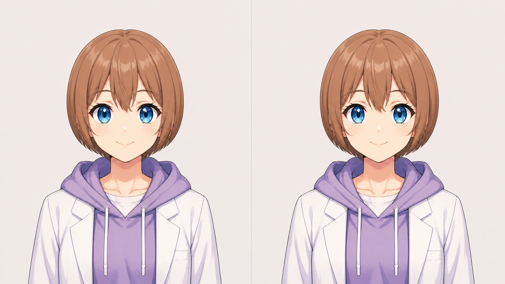

오늘의 과제

박사오늘부터 변장 파티다. 가발 상자를 열었다. 하루는 짧은 단발 가발, 시아·모아는 다음 부에서 고른다.

주판봇가발이라면 쉽습니다! 앞머리 모양부터 똑같이 따라 그리겠습니다!

초파리 연구원가발 안에는 둥근 머리가 있어. 머리부터 그리고 가발을 얹어야 얼굴 크기가 안 바뀌지.

조수 하루번을 풀었더니 머리가 너무 가벼워요… 저 맞죠?

변장 파티 첫날, 하루는 정수리 번 두 개를 풀고 짧은 단발 가발을 썼습니다. 주판봇은 가발의 앞머리부터 그리고, 초파리는 가발을 벗긴 둥근 머리부터 봅니다.
그림 실력·코드·수식을 몰라도 됩니다. 실험을 눌러 보며 따라오세요.
둥근 머리에 가운데 선과 이마 선을 먼저 긋고, 가르마는 이마 선 안쪽에서 시작합니다
거울 앞에서 머리를 빗어 가르마를 타 보면, 가르마 끝은 이마 선에서 조금 안쪽에서 시작해 정수리 쪽으로 갑니다.
애니메이션 설정화에서는 가발을 벗긴 '머리 원형'에 이마 선을 먼저 그려 둡니다. 남자 짧은 머리는 이마 선 양쪽 모서리가 각지게 들어가 있어, 이 모서리를 먼저 잡아야 머리가 짧아 보입니다.


가르마 시작점이 이마 선보다 앞(0보다 작음)에 오면 이마를 가르는 선이 되어 어색합니다. 뒤에 두면 앞머리 다발 사이로 자연스럽게 숨습니다.
이마 선이 높으면 이마가 넓어 보여 어른스럽고, 낮으면 얼굴이 작아 보입니다. 같은 가발도 이마 선 높이에 따라 인상이 바뀝니다.
작업에서는 머리 원형에 가운데 선 → 이마 선 → 가르마 시작점 순서로 표시하고, 그 위에 가발을 얹듯 앞머리를 그립니다.

AI에게 '가운데 가르마 단발'을 부탁했더니 가르마 선이 이마 한가운데까지 내려왔습니다. 그대로 써도 될까요?
가르마가 이마 선을 넘어오면 이마에 금이 간 것처럼 보입니다. 'the parting starts behind the hairline, hidden among the bangs'처럼 시작점을 적거나, 가림 영역으로 이마 부분만 다시 그립니다.
머리 원형 바로 위에 선을 그리지 않고, 머리카락 층의 두께만큼 띄워 바깥 윤곽을 잡습니다

학교 수학으로 보면 — 덧셈과 비율 — 양쪽에 같은 두께가 붙으니 두 배를 더하고, 늘어난 몫을 처음 폭으로 나눕니다.
| 식 조각 | 뜻 |
|---|---|
| 머리 폭 | 머리 원형의 가로 폭(예시 16cm) |
| 머리카락 두께 | 두피에서 바깥 윤곽까지의 두께. 생머리는 얇게, 곱슬은 두껍게 |
| 2 × | 왼쪽과 오른쪽, 양쪽에 한 겹씩 |

수영모를 쓴 사람과 마른 머리를 푼 사람은 머리 크기가 한 둘레 다르게 보입니다. 머리뼈 크기는 같은데 말이죠.
3D 캐릭터에서는 머리카락 덩어리(헤어 메시)를 두피에서 일정한 두께만큼 띄워 만듭니다. 두께가 0에 가까우면 '헬멧 머리'라는 지적을 받습니다. 정수리와 뒤통수를 조금 더 두껍게 잡는 것이 보통입니다.
두께 0은 헬멧처럼, 1~2cm는 보통 생머리, 3cm 이상은 웨이브·곱슬처럼 풍성하게 보입니다(예시 구간).
정수리와 뒤통수 쪽 두께를 앞머리보다 조금 크게 하면 머리가 둥글게 보입니다. 앞머리까지 두꺼우면 얼굴이 묻힙니다.
작업에서는 머리 원형 위에 연한 색으로 두께 띠를 먼저 칠하고, 그 바깥 윤곽을 따라 머리카락 다발을 그립니다.

AI 그림에서 가발이 머리에 딱 달라붙어 머리가 작고 얼굴만 커 보입니다. 고칠 곳일까요?
부피가 빠진 것입니다. 'natural volume, the hair sits slightly away from the scalp, rounded crown'처럼 부피를 적고, 얼굴 크기가 바뀌지 않았는지 원래 그림과 겹쳐 봅니다.
귀·목덜미·어깨를 기준으로 길이를 나누고, 끝을 바깥으로·안으로·일자로 바꿔 봅니다
같은 단발도 끝이 바깥으로 뻗치면 활발해 보이고, 안으로 말리면 차분해 보입니다.
캐릭터 설정에서는 '짧은 머리 = 귀가 보이고 목덜미 위', '중간 머리 = 귀를 덮고 어깨에 닿기 전', '긴 머리 = 어깨 아래'처럼 기준점으로 길이를 적습니다. 남자 중간 머리는 목덜미의 머리 길이에서 특징이 납니다.
길이는 기준점과 비교해 '귀 위 / 목덜미 / 어깨 / 어깨 아래'로 나뉩니다. 이 실험의 길이 0~2는 짧은 머리, 3~5는 중간 머리, 6 이상은 긴 머리입니다.
끝 방향의 예시 인상: 바깥으로 튐 = 활발, 안으로 말림 = 부드럽고 차분, 일자 = 단정, 한쪽 눈 가림 = 신비롭고 차가움.
작업에서는 설정표에 '길이(기준점) + 끝 방향 + 앞머리 길이'를 따로 적어 두면, 그림마다 머리 모양이 흔들리지 않습니다.

'short hair'라고만 썼더니 그림마다 귀가 보이기도, 어깨까지 오기도 합니다. 왜 그럴까요?
길이 낱말만으로는 기준점이 없기 때문입니다. 'chin-length bob that covers the ears, ends curled inward'처럼 기준점과 끝 방향을 함께 적습니다.
가운데 선·이마 선 → 앞머리 → 옆머리 → 뒷머리 → 정리와 잔머리 순서로 얹습니다
화장을 할 때도 얼굴 가운데(눈·코)부터 정하고 바깥으로 넓혀 갑니다.
디지털 작업에서는 앞머리·옆머리·뒷머리를 레이어로 나눕니다. ① 가운데 선·이마 선 ② 앞머리(가르마에서 흘러내림) ③ 옆머리(귀보다 앞) ④ 뒷머리(부피와 실루엣) ⑤ 겹친 선 지우기와 잔머리·튀어나온 머리 더하기.
①은 모든 다발이 출발하는 자리를 정합니다. ②앞머리는 얼굴과 머리카락의 경계라 표정을 얼마나 가릴지가 여기서 정해집니다.
③옆머리는 귀보다 앞에 오게 그립니다. 머리카락으로 얼굴 윤곽을 너무 가리지 않도록 주의합니다. ④뒷머리는 앞머리 뒤쪽에 덧붙이며 부피(2단계)를 둡니다.
⑤에서는 안내선과 겹친 선을 지우고, 흐름을 거스르는 털·튀어나온 가는 털을 군데군데 더해 마무리합니다.

AI 그림의 잔머리는 멋진데 옆머리가 귀 뒤에서 나와 얼굴 옆을 덮었습니다. 그대로 써도 될까요?
옆머리는 귀보다 앞에서 내려와야 자연스럽습니다. 'side locks fall in front of the ears, the face outline stays visible'처럼 적거나, 옆머리 부분만 다시 그립니다.
이 부에서 배운 원리를 그림 생성 AI(Genspark 등)로 직접 확인합니다. A는 이 페이지 그림을 실제로 만든 프롬프트, B는 원리를 하나 빼거나 바꾼 비교용 문장입니다.
참고 그림 내려받기: haru_anime_base · sia_anime_base · moa_anime_base · haru_sheet · sia_sheet · moa_sheet · doctor_sheet · fruitfly_sprites_6 · jupanbot_ref_genspark_v0 · pixel_style_ref_prev_cover
가발 아래 머리 원형에 가운데 선·이마 선·가르마 시작점이 보이는 그림을 만들어, '가르마는 이마 선 뒤'를 눈으로 확인합니다.
첨부: refs/haru_anime_base.png, refs/haru_sheet.png
Illustration, wide 16:9. Art style: high-quality anime illustration, clean confident lineart, two-tone cel shading, natural adult proportions. Match the attached reference images exactly (face, hair, colors, accessories). All characters are adults in their early twenties (the Professor is an adult man in his thirties, normal proportions, not chibi); modest outfits exactly as described. Two panels side by side of the same character, front view, head and shoulders. Left: Haru (adult lab assistant, long straight pink hair with navy streaks and a thick navy streak down the center of the bangs, two round hair buns on top, small ahoge, big blue eyes), wearing lavender hoodie with white drawstrings over a white t-shirt, open white knee-length lab coat, rolled-up jeans, lavender sneakers, holding a chin-length light chestnut-brown bob with straight bangs wig in her right hand. Right: the same Haru as a simple drawing study: a smooth round head shape (hair drawn only as a faint light outline), with a thin blue center line, a blue hairline curve on the forehead, and a small orange dot where the hair parting starts, clearly BEHIND the hairline. Light from the upper left. The two faces are exactly the same size. Plain off-white studio background or a bright clean lab interior. No text, no letters, no numbers, no speech bubbles, no logos, no watermark, no revealing clothing, not childlike, no school uniform, not resembling any famous anime character.
Same image. Change only: on the right side, draw the parting line starting right above the eyebrows, crossing the forehead. Keep the same framing. Still no text.

실제 결과: A에는 하루의 원래 머리 위에 파란 가운데 선·이마 선과 주황 가르마 시작점(이마 선 뒤)이 그려졌습니다. 머리 원형만 따로 그리지는 않았습니다. B는 안내선만 사라졌고, 가르마가 이마를 가르는 선은 생기지 않았습니다. 도구가 실수를 고쳐 그린 것입니다. 잘못된 모습은 6부 f1 그림과 1부 1단계 실험(가르마 시작점을 0보다 앞으로)에서 보세요. 차이를 직접 보려면 새 대화에서 B 문장을 처음부터 넣어 보세요.
같은 하루, 같은 단발에서 부피만 바꿔 실루엣이 얼마나 달라지는지 봅니다.
첨부: refs/haru_anime_base.png, refs/haru_sheet.png
Illustration, wide 16:9. Art style: high-quality anime illustration, clean confident lineart, two-tone cel shading, natural adult proportions. Match the attached reference images exactly (face, hair, colors, accessories). All characters are adults in their early twenties (the Professor is an adult man in his thirties, normal proportions, not chibi); modest outfits exactly as described. Two panels side by side, front view, head and shoulders, same pose and lighting. Left: Haru (adult lab assistant in her early twenties, big bright blue eyes) wearing a wig: a chin-length light chestnut-brown bob with straight bangs, but drawn completely flat, hugging the skull like a swimming cap with no volume; she keeps her own face, big bright blue eyes and outfit; the wig completely covers her usual pink hair, buns and navy streaks, wearing lavender hoodie with white drawstrings over a white t-shirt, open white knee-length lab coat, rolled-up jeans, lavender sneakers. Right: Haru (adult lab assistant in her early twenties, big bright blue eyes) wearing a wig: a chin-length light chestnut-brown bob with straight bangs with natural volume: the hair sits slightly away from the scalp, rounded crown, soft outward silhouette; she keeps her own face, big bright blue eyes and outfit; the wig completely covers her usual pink hair, buns and navy streaks, wearing lavender hoodie with white drawstrings over a white t-shirt, open white knee-length lab coat, rolled-up jeans, lavender sneakers. The faces are exactly the same size; only the hair volume differs. Plain off-white studio background or a bright clean lab interior. No text, no letters, no numbers, no speech bubbles, no logos, no watermark, no revealing clothing, not childlike, no school uniform, not resembling any famous anime character.
Same image. Change only: make both bobs identical; do not mention volume or how far the hair sits from the scalp. Keep the same framing. Still no text.

실제 결과: A는 왼쪽 단발의 정수리가 조금 납작하고 오른쪽이 한 둘레 큽니다. 차이는 작게 나왔습니다. B는 부피 낱말을 빼자 두 단발이 똑같아졌습니다. 얼굴 크기는 두 그림 모두 같습니다.

| 항목 | 주판봇 | 초파리 |
|---|---|---|
| 닮음(하루로 알아보나) | 7 | 8 |
| 원리(이마 선·가르마·부피) | 4 | 9 |
| 자연스러움(흐름·끝 모양) | 6 | 8 |
| 합계 | 17 | 25 |


점수는 이야기 속 예시입니다. 실제 그림을 평가한 값이 아닙니다.
| 주제 | 한 줄 | 작업에서는 |
|---|---|---|
| 이마 선·가르마 | 가르마는 이마 선보다 뒤에서 | 가운데 선 → 이마 선 → 가르마 시작점 |
| 부피 | 실루엣 폭 = 머리 폭 + 2 × 두께 | 원형에서 두께만큼 띄워 윤곽 |
| 길이·끝 | 기준점(귀·목덜미·어깨) + 끝 방향 | 길이와 끝을 따로 정하기 |
| 순서 | 가운데 선 → 앞머리 → 옆머리 → 뒷머리 → 잔머리 | 얼굴에 가까운 것부터 |

이 페이지에 나온 개념·방법·비유·쓰임을 모았습니다. 검색하고, "설명 보러 가기"로 본문에 돌아갑니다.
지식 색인을 출처와 함께 파일로 내려받습니다. 서지 관리는 BibTeX·RIS, 온톨로지 편집은 Turtle, 그래프 도구는 CSV, 여러 페이지 합치기는 kg.json입니다.